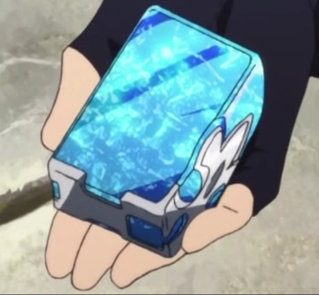
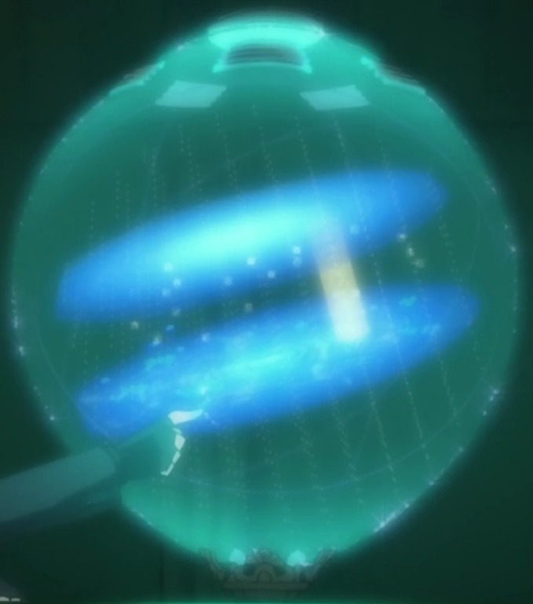
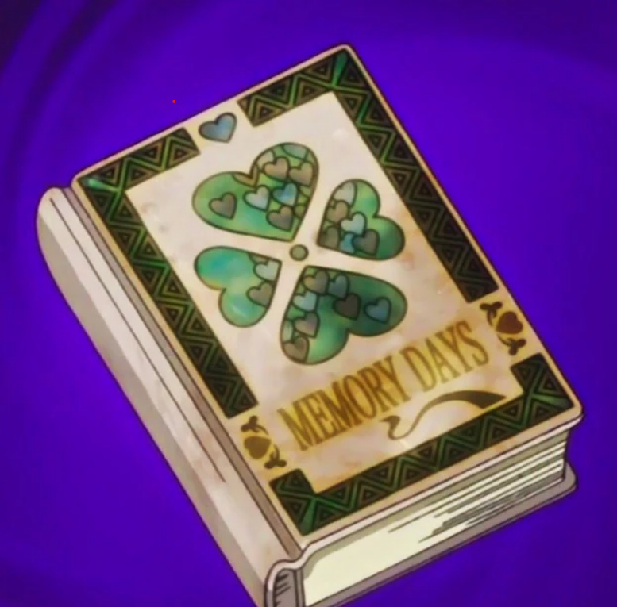

cristales de teletransportación
Origen: Sword Art Online
Un cristal con forma de prisma rectangular de color celeste con destellos algo mas oscuros y un contorno en su parte inferior de color plateado. Son cristales algo caros, cuentan con un solo uso y se activan al nombrar la ciudad a la que se quiere ir teletransportando solo al portador. Al hacer esto el cristal se destruye.
Esfera de los Espejismos
Origen: Sword Art Online
objeto sirve para visualizar de forma holográfica alguna zona de previamente mapeada. Su apariencia es la de una caja con una pequeña bola de cristal en su interior, que al ser presionada proyecta una luz azul brillante en forma de esfera. Es capaz de reproducir las villas y demás elementos del paisaje con gran detalle, solo funciona en zonas previamentes exploradas por el portador. Requiere sintonizacion.
Días de Memoria (Libro)
Origen: Fairy Tail
Este Artículo Mágico parece ser un grueso libro de tapa dura plateado con cuatro corazones en la cubierta, dispuesto para parecerse a un trébol de cuatro hojas. Estos corazones están llenos de pequeños corazones de rojo, azul y blanco. También se pueden ver triángulos verdes que rodean los corazones y el título que se imprime debajo de los corazones con una cinta debajo. El contenido del libro está escrito en letra pequeña con el corazón de cuatro hojas separándolos entre sí. El libro hace que una persona regrese al tiempo que no puede querer recordar. Sin embargo, si alguien más toca a esa persona, también será transportado al pasado. El efecto del libro dura seis horas, y después de que pasen las seis horas, la persona será transportada de regreso al presente. Si las personas que tocaron al transportista original no los tocan justo antes del viaje de regreso al presente, se verán obligados a quedarse en el pasado.
